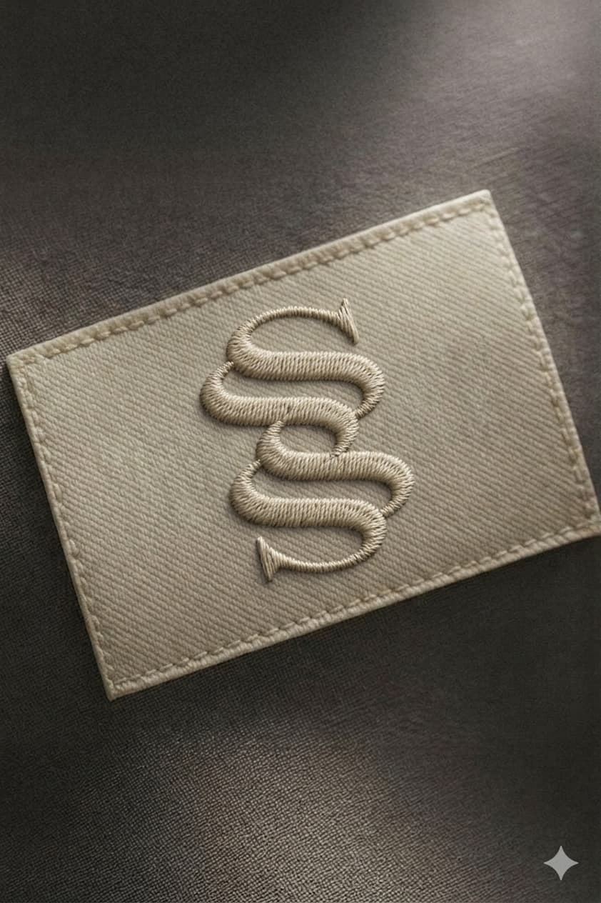
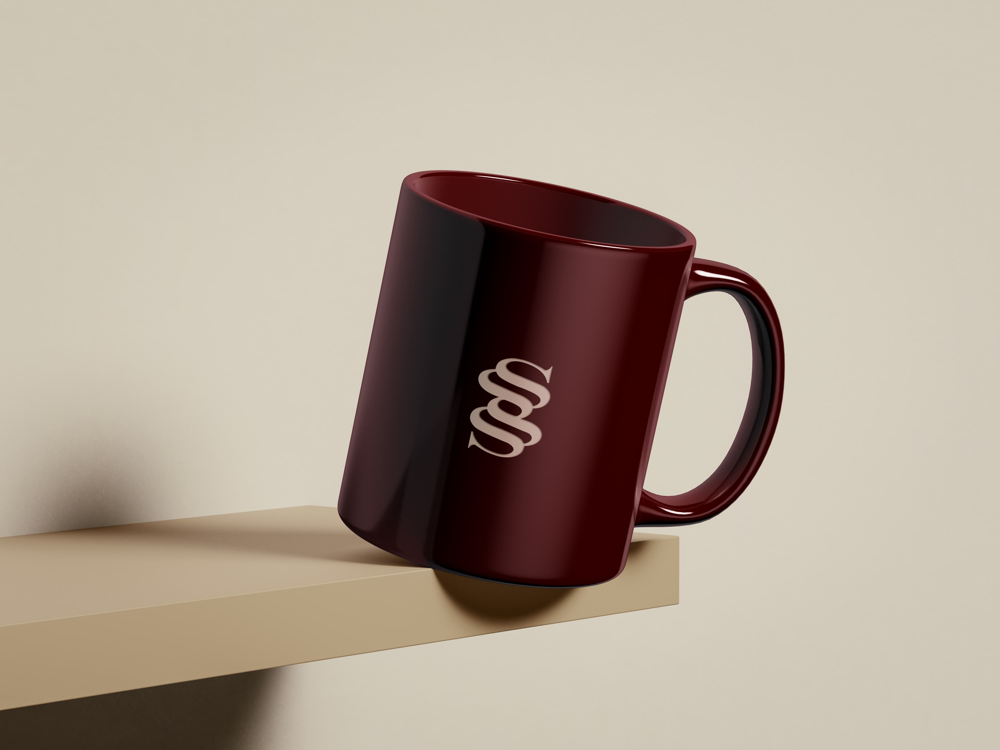
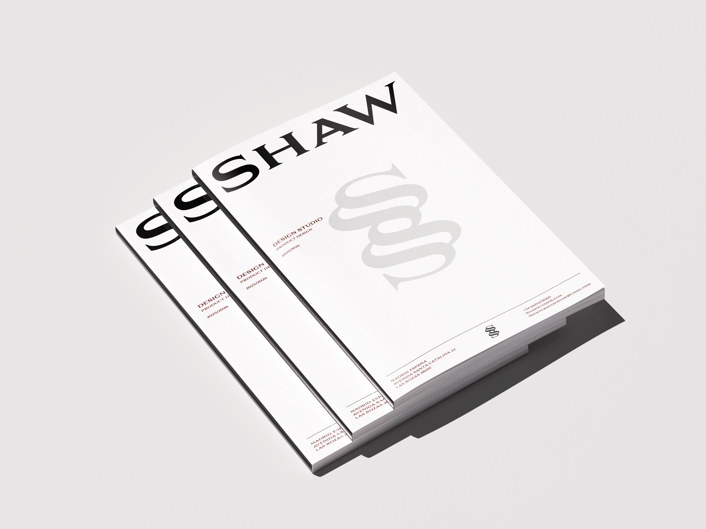

Monograma Shaw
Identidad personal basada en el apellido Shaw
2025–2026
Identidad personal
Proyecto personal
Illustrator, Photoshop
Shaw es mi tercer apellido, de origen escocés. Desde el inicio del grado sentí la necesidad de construir una identidad visual propia que me representara profesionalmente y que tuviera raíces en algo personal. El proceso comenzó con bocetos explorando distintas formas de la letra S hasta encontrar un isotipo con carácter propio. La paleta se redujo a dos colores: granate #51100f y crema #f3ece1, que evocan tradición y elegancia sin estridencias. La identidad se aplicó a lacre, tarjetas de visita, valla urbana, bordado en tela, etiqueta de ropa, taza y pantalla móvil. Es el inicio de un proyecto personal que quiero desarrollar en el futuro.


